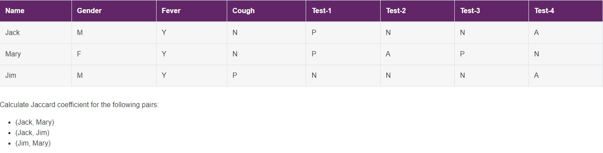

Unit 5 learnings
The following e-portfolio page will focus on Jaccard Coefficient
The Jaccard coefficient or similarity index is a simple measure used to show the similarity between data samples in two sets of data. Jaccard coefficient is commonly used int he following contexts:
- Text Mining
Finding similarities between two text documents
- E-Commerce:
Finding similar customers based on their purchase ihstory
- Recommendation system:
Finding similar customers based on ratings and reviews (movie/product recommendations)
The Jaccard coefficient value ranges from 0 to 1. The higher the number, the more similar the data is with each other. This can be displayed in the below symbolic form:
J(A, B) = |A ∩ B| / |A U B| = |A ∩ B| / |A| + |B| - |A ∩ B|
J = (Count of COMMON ELEMENTS in BOTH sets)/(Count of elements in FIRST set + count of elements in SECOND set - count of COMMON elements in both sets). For the example given in Units 5:

J(Jack, Mary) = (5/(6+6-5) = 0.71
J(Jack, Jim) = (6/6+6-6) = 1
J(Jim, Mary) = (5/6+6-5) = 0.71
K Means Clustering
Unit 5 also introduces K means clustering and the pre-processing of data to input into the algorithm. Important steps noted are clipping outliers. For this task we used the IQR rule, which is calculated as +-1.5*IQR. Secondly eliminating missing values. In our assignment example this was done by substituting the mean value for missing values. Thirdly, K means uses euclidean distance to measure centroid distances. Therefore categorical features must be encoded prior to running them through the K means algorithm. This as done using the scikit learn ordinal encoder.